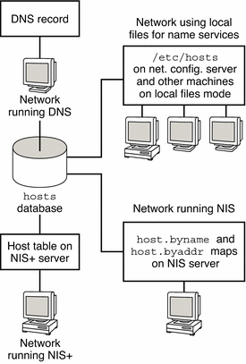

Previous
Previous
inetd Internet Services Daemon
The inetd daemon starts up Internet standard services when a system boots, and can restart a service while a system is running. Use the Service Management Facility (SMF) to modify the standard Internet services or to have additional services started by the inetd daemon.
Use the following SMF commands to manage services started by inetd:
svcadm | For administrative actions on a service, such as enabling, disabling, or restarting. For details, refer to the svcadm(1M) man page. |
svcs | For querying the status of a service. For details, refer to the svcs(1) man page. |
inetadm | For displaying and modifying the properties of a service. For details, refer to the inetadm(1M) man page. |
The proto field value in the inetadm profile for a particular service indicates the transport layer protocol on which the service runs. If the service is IPv4-only, the proto field must be specified as tcp, udp, or sctp.
For instructions on using the SMF commands, refer to "SMF Command-Line Administrative Utilities" in System Administration Guide: Basic Administration.
For a task that uses the SMF commands to add a service that runs over SCTP, refer to How to Add Services That Use the SCTP Protocol.
For information on adding services that handle both IPv4 requests and IPv6 requests, refer to inetd Internet Services Daemon
Network Databases and the nsswitch.conf File
The network databases are files that provide information that is needed to configure the network. The network databases follow:
hosts
ipnodes
netmasks
ethers database
bootparams
protocols
services
networks
As part of the configuration process, you edit the hosts database and the netmasks database, if your network is subnetted. Two network databases, bootparams and ethers, are used to configure systems as network clients. The remaining databases are used by the operating system and seldom require editing.
Although nsswitch.conf file is not a network database, you need to configure this file along with the relevant network databases. nsswitch.conf specifies which name service to use for a particular system: local files, NIS, DNS, or LDAP.
How Name Services Affect Network Databases
The format of your network database depends on the type of name service you select for your network. For example, the hosts database contains, at least the host name and IPv4 address of the local system and any network interfaces that are directly connected to the local system. However, the hosts database could contain other IPv4 addresses and host names, depending on the type of name service on your network.
The network databases are used as follows:
Networks that use local files for their name service rely on files in the /etc/inet and /etc directories.
Note - DNS boot and data files do not correspond directly to the network databases.
The following figure shows the forms of the hosts database that are used by these name services.
Figure 10-2 Forms of the hosts Database Used by Name Services
The following table lists the network databases and their corresponding local files and NIS maps.
Note - The ipnodes database is removed from Solaris releases after Solaris 10 11/06.
Table 10-1 Network Databases and Corresponding Name Service Files
Network Database | Local Files | NIS Maps |
|---|---|---|
/etc/inet/hosts | hosts.byaddr hosts.byname | |
ipnodes | /etc/inet/ipnodes | ipnodes.byaddr ipnodes.byname |
/etc/inet/netmasks | netmasks.byaddr | |
/etc/ethers | ethers.byname ethers.byaddr | |
/etc/bootparams | bootparams | |
/etc/inet/protocols | protocols.byname protocols.bynumber | |
/etc/inet/services | services.byname | |
/etc/inet/networks | networks.byaddr networks.byname |
This book discusses network databases as they are viewed by networks that use local files for name services.
Information about the hosts database is in hosts Database.
Information about the netmasks database is in netmasks Database.
Refer to System Administration Guide: Naming and Directory Services (DNS, NIS, and LDAP) for information on network databases correspondences in NIS, DNS, and LDAP.
nsswitch.conf File
The /etc/nsswitch.conf file defines the search order of the network databases. The Solaris installation program creates a default /etc/nsswitch.conf file for the local system, based on the name service you indicate during the installation process. If you selected the "None" option, indicating local files for name service, the resulting nsswitch.conf file resembles the following example.
Example 10-4 nsswitch.conf for Networks Using Files for Name Service
# /etc/nsswitch.files: # # An example file that could be copied over to /etc/nsswitch.conf; # it does not use any naming service. # # "hosts:" and "services:" in this file are used only if the # /etc/netconfig file contains "switch.so" as a # nametoaddr library for "inet" transports. passwd: files group: files hosts: files networks: files protocols: files rpc: files ethers: files netmasks: files bootparams: files publickey: files # At present there isn't a 'files' backend for netgroup; the # system will figure it out pretty quickly, # and won't use netgroups at all. netgroup: files automount: files aliases: files services: files sendmailvars: files |